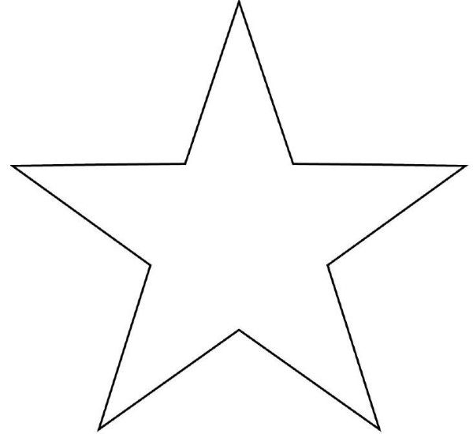
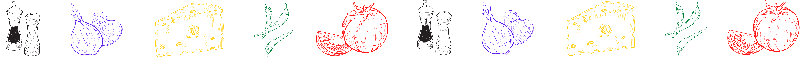

Mousse de maracujá fácil e prática

| Mousse | Geleia: | Ingredientes extras | |||||||||
|---|---|---|---|---|---|---|---|---|---|---|---|
| 200 ml de suco de maracujá concentrado | Polpa com sementes de 2 maracujás maduros | Paciência | |||||||||
| 1 lata de leite condensado | 3 colheres (sopa) de açúcar | Amor | |||||||||
| 1 lata de creme de leite | 1/3 de xícara (chá) de água | Dedicação | |||||||||
| 1 envelope de gelatina sem sabor (12 gramas) | |||||||||||
| DICA: é muito importante anotar os ingredientes para na hora não faltar nada. | |||||||||||
- Bata no liquidificador o suco de maracujá, o leite condensado e o creme de leite até obter um creme aerado. Incorpore a gelatina (já hidratada e derretida conforme instruções da embalagem) e bata por 1 a 2 minutos para misturar bem..
- Distribua em taças individuais (ou travessas de sua preferência) e leve à geladeira por 4 a 6 horas ou até ficar consistente.
- Sirva regadas com a calda.
Calda
- Leve os ingredientes da calda ao fogo e ferva por 2 a 3 minuto, lembre-se de mexer. Utilize fria.


Organização: Mírian Andryellen Vital Pinheiro e Vanessa Maria de Oliveira Silva.
Qualquer dúvida pode entrar em contato com os respectivos meios abaixo.
E-mails: mirian.v@escolar.ifrn.edu.br ou vanessa.maria@escolar.ifrn.edu.br.
Telefones: (084) 99465-7045 ou (084) 98816-3929